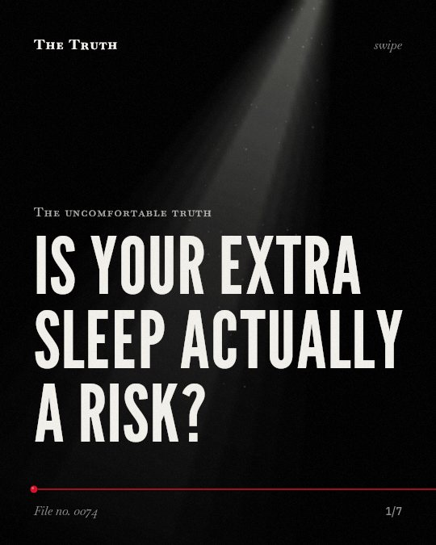

The uncomfortable truth
Is your extra sleep actually a risk?

Long sleep duration is linked to a 1.30 risk of death.
While short sleep is also linked to higher mortality, some evidence suggests only long sleep duration is significantly linked to increased risk.
Established. Several studies combined, or official data. The evidence is mixed.
What the research found
No significant difference was identified for periods of self-reported sleep <7 hours.
“No significant difference was identified for periods of self-reported sleep <7 hours, whereas similar patterns were observed for stroke and cardiovascular disease mortality.”
Systematic review, 2018. Kwok et al., Journal of the American Heart Association.
The overall risk difference for all-cause mortality was 0.09 (95% CI 0.07-0.11) favouring the >9 h group compared with the 7-9 h group.
“The overall RD for all-cause mortality was 0. 09 (95% CI 0. 07-0. 11) favouring the >9 h group compared with our reference.”
Meta-analysis, 2018. García‐Perdomo et al., Epidemiology and Psychiatric Sciences.
The risk of death for 4, 5, 6, 8, 9, 10 and 11 hours/day of nighttime sleep was 1.09, 1.21, 1.37, 1.55, 1.37, 1.55, and 1.84 respectively.
“09), 1. 21 (1. 18-1. 24), 1. 37 (1. 32-1. 42) and 1. 55 (1. 47-1. 63) for 4, 5, 6, 8, 9, 10 and 11 hours/day of nighttime sleep, respectively”
Meta-analysis, 2016. Shen et al., Scientific Reports.
Long duration of sleep is linked to a 1.30 risk of death (1.22 to 1.38; P < 0.0001).
“Long duration of sleep was also associated with a greater risk of death (1. 30; [1. 22 to 1. 38]; P < 0. 0001)”
Meta-analysis, 2010. Cappuccio et al., SLEEP.
For all-cause mortality, when sleep duration was 7 hours per day, the pooled RR was 1.13 (95% CI, 1.11-1.15) per 1-hour increment.
“For all-cause mortality, when sleep duration was 7 hours per day, the pooled RR was 1. 13 (95% CI, 1. 11-1. 15) per 1-hour increment.”
Systematic review, 2017. Yin et al., Journal of the American Heart Association. This shows a link, not a cause.
Short duration of sleep is linked to a 1.12 risk of death (95% CI 1.06 to 1.18; P < 0.01).
“In the pooled analysis, short duration of sleep was associated with a greater risk of death (RR: 1. 12; 95% CI 1. 06 to 1. 18; P < 0. 01)”
Meta-analysis, 2010. Cappuccio et al., SLEEP.
The evidence on sleep duration is mixed.
Some studies show a risk for short sleep, while others find no significant difference for sleep under 7 hours. Long sleep duration shows a consistent link to risk.
Duration may be a symptom, not the cause.
Long sleep might reflect underlying systemic or neurological diseases that cause sleep fragmentation rather than the duration itself. That may be why the data is contested.
This part is our reading of the evidence, not a finding.
You watch the clock at 3 a.m.
The room is dark. You are tired but your body feels heavy. You wonder how many hours you have left before the sun rises.
The honest summary
The evidence shows a general trend that both extremes of sleep duration are linked to adverse health outcomes, but the strength and significance of the risk for short sleep vary significantly across different meta-analyses.
Some findings regarding long sleep may reflect underlying systemic or neurological diseases that cause sleep fragmentation rather than the duration itself.
What is your body trying to tell you?
Sources
- Jiawei Yin, Xiaoling Jin, Zhilei Shan et al. (2017). Relationship of Sleep Duration With All‐Cause Mortality and Cardiovascular Events: A Systematic Review and Dose‐Response Meta‐Analysis of Prospective Cohort Studies. Journal of the American Heart Association. Systematic review, cited 720 times.
- Francesco Paolo Cappuccio, Lanfranco D’Elia, Pasquale Strazzullo et al. (2010). Sleep Duration and All-Cause Mortality: A Systematic Review and Meta-Analysis of Prospective Studies. SLEEP. Meta-analysis, cited 2,223 times.
- Xiaoli Shen, Yili Wu, Dongfeng Zhang (2016). Nighttime sleep duration, 24-hour sleep duration and risk of all-cause mortality among adults: a meta-analysis of prospective cohort studies. Scientific Reports. Meta-analysis, cited 125 times.
- Chun Shing Kwok, Evangelos Kontopantelis, George Kuligowski et al. (2018). Self‐Reported Sleep Duration and Quality and Cardiovascular Disease and Mortality: A Dose‐Response Meta‐Analysis. Journal of the American Heart Association. Systematic review, cited 502 times.
- Herney Andrés García‐Perdomo, James Alejandro Zapata-Copete, Christian Andrés Rojas-Cerón (2018). Sleep duration and risk of all-cause mortality: a systematic review and meta-analysis. Epidemiology and Psychiatric Sciences. Meta-analysis, cited 79 times.
Also read for this file, not quoted
This file was researched and drafted by software, then checked by rules a model cannot talk its way around: each quote above was matched word for word against the paper, and every number had to appear in it. How files are made.